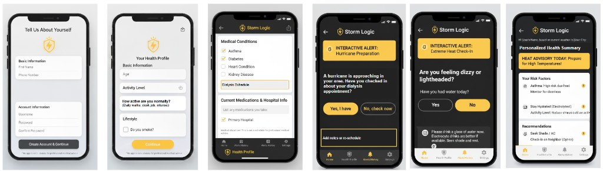

Overview
Our interdisciplinary team (physicians, climate scientists, urban planners, engineers, and business students) was tasked with protecting vulnerable communities from extreme weather events. We developed CareCast, a real-time AI companion that bridges the gap between environmental data and proactive healthcare.
We focused on the problem of extreme weather putting at-risk populations in danger due to limited access to real-time health guidance — specifically supporting heat-related events and preventing avoidable ER visits, which strain healthcare systems during extreme weather events.
Core Contributions
Cross-Functional Facilitation
Drove the core product vision by facilitating ideation sessions across the interdisciplinary team, ensuring all perspectives were synthesized into a coherent product direction.
UX Design & Future Visioning
Developed functional mockups for the personalized alert system, visualizing the "future-state" user experience for how AI-driven health guidance would be delivered during climate emergencies.
Business Impact Strategy
Supported the development of the pitch deck and business plan, focusing on the impact analysis and go-to-market approach.
Mock PRD
Independently authored a product requirements document to practice translating the hackathon concept into a structured product spec.
View Mock PRDInitial prototype demonstrating the core CareCast alert and health guidance flow.
Demo by Ahsan, our team's engineering expert.
Evolved UI mockup showing the full personalized health profile, interactive alerts, and real-time health guidance screens — including extreme heat check-ins and personalized risk factor summaries.
